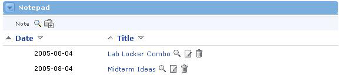

What is the Notepad?
The Notepad Channel allows a user to maintain a personal set of notes related to a particular offering. These notes are not viewable by other members of the offering or system users. Notes may be added, edited and deleted from this channel. Notes can be sorted by entry date or title for display.
